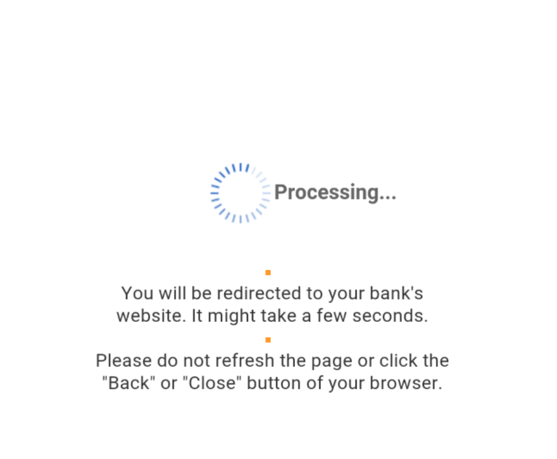

Anti-Fraud Knowledge
You should be well aware there are anti-fraud policies, procedures, and mechanisms in place within every company designed to prevent theft and online fraud. There are a lot of things happening behind the scenes trying to prevent people like us from making money the way we do. It's so out of control though that most companies understand fraud is now a cost of doing business as their profits exceed their losses so fraud is somewhat of an acceptable risk. Businesses can't fully stop people from carding because it would actually hinder real customers from making an online purchase from their website so it's a fine line companies must walk when designing their anti-fraud policies that allow the purchase and checkout to be user friendly yet stop fraud from occurring. The harder it is for people to navigate and make a purchase from a website the more inclined those customers are to go somewhere else where it's easier to checkout. The more you increase security the less user friendly it all becomes. This goes for everything really.
No company wants any of their customers upset because their credit card is always being declined when they're trying to make an online purchase. Anti-Fraud mechanisms can be viewed as a firewall on a computer. The firewall has to let some things in and out but will block anything suspicious or if it's setup to do so. We just need to find those holes that allow us to be successful.
Not all merchants today have the same anti-fraud protections in place and each website will have different anti-fraud protections with various different setups. Some businesses will process every transaction that comes their way while others have advanced fraud prevention in place which will scrutinize each transaction. Let's take a look at some well-known anti-fraud protections out there currently so you have an understanding of what you're up against when you're carding like a maniac.
Europay, Mastercard and Visa (EMV) Credit Cards
This is commonly referred to as CHIP and PIN credit cards. When you're making a purchase with these types of credit cards you must insert the CC into the Point-of-Sale (POS) machine (the machine you stick your CC into) and enter your PIN to complete the purchase. These CCs usually have the "Tap" feature as well for purchases that are <$100.
Using these types of credit cards is the standard that most merchants have been accepting since 2015. In fact, some countries have made CHIP and PIN mandatory across all merchants. If there is a fraudulent purchase and it turns out the merchant was not using a CHIP and PIN POS machine when doing the transaction the merchants are indeed liable for the loss.
Click to Read - EMV information
Click to Read - EMV Compliance Explained
Fraud Score
Picture every online transaction is assigned a fraud score number automatically through algorhythms by computers in order to determine if an online purchase is of high risk for fraud. For arguments sake let's say this level is between 0 - 100 and is based on many factors that you'll be learning about in this chapter.
So, if a transaction has a fraud score of say 50 this will trigger a manual review within the CC issuer which an agent (a real person) will review and decide to deny or allow the purchase. Some factors will include contacting the card holder, comparing spending data, location of purchase, amount, risk assessment, etc. whereas higher fraud scores will simply get the transactions automatically declined. Makes sense right? Don't need to pay an employee to review a CC purchase coming from Pakistan when the card holder lives in Maine and has never bought anything outside of USA in their whole purchasing history with that credit card company. A red flag wouldn't you agree? Algorithms detect all this shit going through each client's spending data, online shopping habbit's purchase amounts' etc. Don't under estimate big data people. Having a transaction manually reviewed from an employee is slowly becoming a thing of the past.
If you carded a $40 USD item from some low-level company website compared to carding a $1000 USD item from Amazon these will have a different fraud score. Forget about carding Amazon as too many people already have accounts there already and by-passing Amazon Anti-Fraud measures requires access to the CC holder's email. The point to take away is if the cardholder rarely makes any online purchases and only uses their CC for filling their cars with petrol and you make an online purchase from Apple for an iMac it's not going to work. The CC holder spending habits and online behaviors are factors as well but people seem to forget what's happening in the background with these companies.
Some people talk about "testing" the CC before using it to ensure it's valid and working. I found using the CC checkers out there along with some of my own methods I wasn't sure if it affected success or contributed to failure. Issuing banks are well aware of the fraud tactics used today and aren't fully retarded. They can detect a "testing" on a CC from their bank like if a small purchase of $1.50 is made from one place and then (5) minutes later a larger purchase is done somewhere else this is a classic sign of fraudsters "testing" to see if the stolen credit card just purchased is valid and works. I don't recommend this. Just assume the CC is valid that you've purchased because you know the source where you bought from is legitimate which is in Chapter 7.
By connecting to a website from an IP that is associated with malicious behaviour in the past will increase your fraud score on the website or from the financial institution and will contribute to getting your transaction declined and the card burned.
This makes sense yes? If you're connecting to a website you plan on carding on from your RDP but the IP of the RDP you're connecting from is associated to evilness then it's safe to say your efforts won't be successful. The companies s can see that you're connecting to their website from a VPN, Tor exit node, or other IP addresses which they deem suspicious and malicious. Other hackers have been up to no good too from the socks, RDP, or Tor exit node you use and some IP's are flagged as malicious by numerous cyber security companies (Big names) that share this data to protect their customers against fuck faces like us. Understand that when you connect to a website you're revealing a lot about your browser, location, extensions, configurations, etc. that will be used against you in anti-fraud mechanisms.
Some items that contribute to a higher fraud score when making an online purchase are:
Is the customer using services identified as a VPN or blacklisted IPs.
Are the shipping and billing countries different?
Is the order being shipped to Pakistan or Nigeria type countries far from card holder location.
Is the BIN from a different country than the IP address used to order?
Is the shipping address an identified mail forwarding company?
Is the IP address from proxy or socks?
Is the e-mail address from a free provider like Yahoo, Yandex, or Hotmail.
Remember, it's important to understand certain transactions get flagged for certain things. To hammer this point home let's review it again.
YELLOW ALERTS
Is the user ordering from a free e-mail address?
Does the customer phone number match the user’s billing location?
Does the BIN number from the card match the country the user states they are in?
Does the user’s inputted name for the bank match the database for that BIN?
Does the customer service phone number given by the user match the database for that BIN?
RED ALERTS
Does the country that the user is ordering from match where they state they are ordering from?
Is the user ordering from one of the designated high risk countries?
What is the likelihood that the user is utilizing an anonymous proxy?
Is the user ordering from an e-mail address that has been used for fraudulent orders?
Is the user utilizing a username or password used previously for fraud?
Is the user specifying a known drop shipping address
You want to be a normal customer and appear like the actual card holder when making an online purchase which can reduce your fraud score once you have an understanding of what will trigger it.
IP Geo-Location
I think everyone knows about IP geo-location and if you don't you really need to understand this. You can't just go and buy CCs without knowing the card holders name or address (this actually depends) because when you're making an online purchase with a stolen credit card you must be connecting from as close as you can to the legitimate card holder's address to make success more. Just like we talked about before you're not making a purchase from Nigeria if the card holder resides in New York City and has never made an international purchase like it before. It's going to get declined and you're going to burn that card.
If you're attempting make an online purchase but connecting nowhere near the card holders address or location this can contribute to getting the CC you bought burned and rendered useless. This is an important thing to know!
Depending on whether you're using a laptop or mobile device will dictate whether you'll require a Remote Desktop Protocol (RDP)/socks location, Virtual Private Network (VPN) location, or burner cell phone that is as close to the card holders address as possible for best success. You want to tunnel all of your web traffic to appear to the website and credit card company to be coming from the CC holder location making sure whatever location the RDP, VPN, socks, or mobile is the same. You should be buying CC details with the card holders address and you would select the location of your RDP/socks to be as close to the location as the card holder as possible.
If you want to make meaningful money with carding you need to put yourself in the card holder shoes so you know what's going to be required in order to be successful with decent sized purchases. Making a purchase from the location the card holder resides in will increase your chance of success and decrease your fraud level score with whatever website you're carding on.
Web Browser Fingerprinting
You want to be using normal web browsers when browsing the website you plan on carding and may want the ability to change the User-Agent string of the web browser when visiting the website you plan on carding on. You can use Windows 7 or 10 in a VM freshly installed each time. A good idea is to always use a "New Private Window" when visiting the target you're going to be carding and changing the User-Agent to that of a Windows, macOS, or mobile device if you're using Linux before connecting to the website. Most customers are Linux users. Blend in with the herd.
There are so many different User-Agent add-ons for every browser out there so if you're comfortable with Firefox, Safari, etc. then just research which User-Agent add-on you'll need. You can learn how to do this under the "Equipment Needed" in Chapter 7.
Also, it's important to note that if the CC holder has already used that card on amazon or whatever website you're carding on their web browser would have already been finger printed so when you try and use the User-Agent changer and connect to the website it will know a different web browser is logging on and will notify the users account of the change with an email of some sort preventing you from accessing. Many different things at play which is why you avoid big name companies because we assume everyone has already signed up for Amazon already. We want smaller sites.
Web browsing habits
It's safe to say the websites you're visiting are tracking, analysing, and assessing your movements when on the website for a variety of different reasons such as marketing, product placement, product improvement, and also to prevent fraudulent purchases. Most eCommerce websites track how long you were browsing the website for, which pages you went to, which pages you stayed on the longest, and what products you were most interested in.
There are some websites that will deem a purchase to be suspicious if that person spent a whole 30 seconds on it before making a $8000 USD purchase. This appears a little odd considering you didn't spend time on the website and instead just went right away with committing fraud against the website in question. Think like the card holder...Would a normal user make a purchase so quickly? Wouldn't they spend time first viewing the items before making a purchase?
You want to
become
the card holder and as such everything about them including normal browsing habits. Act like a human and not a bot.
Click to Read - Do normal web browsing customer habits. Be the customer.
Card holder purchasing habits
Financial institutions have learned from people committing credit card fraud against them over the years and have implemented various anti-fraud techniques to combat credit card fraud. They've learned how people commit fraud against them and begin to develop methods to counter this. They do this by learning the CC holder's purchasing behaviours. By knowing the card holders purchasing habits' websites they purchase from' the financial institutions can detect fraud fairly quickly and prevent the transaction from going through pretty easily.
For example, the CC you just purchased from the Empire (they' shutdown now) or White House marketplace is valid but the CC holder only uses that CC to make specific online purchases so when you go off to card $500 USD worth of dildos it's flagged as suspicious and the transaction declined with the credit card being put on hold until the owner can confirm or deny this purchase. The card holder never makes a purchase like the one you're trying to card which results in the CC being burned. Understand?
Another example is if the card holder only uses that credit card to buy gas or groceries and you're attempting to purchase something that isn't normal for that specific card holder then expect the transaction to be cancelled and the CC flagged. This is important to understand as just because you have the right CC to make the purchase doesn't mean you have the same purchasing habits as the CC holder to make that purchase successfully.
This also goes for how often the CC is used. If the card holder hasn't used the CC in the past little while and now you're carding some website that's unusual for that card holder this will get it flagged as suspicious contributing to your failure.
same goes for if the card holder has historically made only small purchases with their CC and now you're trying to card a large purchase which is larger than the card holder has ever made before with that CC guess what? You got it. The transaction will most likely fail and the CC will be burned.
When you're assuming the card holder you're not just assuming their identity with a CC, geolocation, and address but you're assuming their whole purchasing behaviours online. Of course this is difficult for you to know about since you wouldn't know the card holders purchase history at all. Tricky things you see?
Address Verification System (AVS)
AVS is an anti-fraud system that's used by many merchants to ensure that the billing address is correct and matches the card holders address. AVS works usually by comparing the numerical part of the address (address and zip/postal code) against the address on file with the CC issuer or bank to make sure it's accurate. In my experience when I've made legitimate purchases online with my own CC I've mis-spelled my own street name but put the correct number of my address and zip/postal code and it went through. For the most part just assume AVS will automatic decline the transaction if the AVS does not fully match.
You want to enter the right address of the card holder when asked for it when making an online purchase. Entering the wrong information, depending on the website, will get the CC flagged and the transaction declined.
Also, if you're entering a different shipping address then the card holders address this will raise your fraud score and may get the transaction flagged especially if this is the first time the "card holder" is making a purchase from the website in question. Make sense? Picture it from the website or companies point of view OK? A new customer has just made a relatively large purchase and wants the product shipped somewhere that's different then the card holders address. By allowing anyone just to show up, make a purchase, and have it sent somewhere else has an increased risk of fraud occurring. Right? This is common sense shit and eCommerce websites aren't as retarded as they once were. That being said there are ways to have the item shipped to a different location than the CC holder's address that will appear "normal" and low risk to the merchant you'll learn in Chapter 8.
Furthermore, depending on what location or country you're trying to get the carded item shipped will also contribute to getting the transaction declined. Again, if the card holder lives in Texas and you're carding an item to Iceland things probably aren't going to work out the way you want them to all the time now are they?
3DSecure, Verified By VISA (VBV) and SecureCode
Alright this really is one of the most important Anti-Fraud measures in place and probably will be the majority of what you're going to encounter in 2020. Much problems for beginner carders out there but very important to know.
3DSecure is a XML type protocol which is sent across the internet over encrypted SSL channels which was designed to add an additional layer of security for online debit and credit card purchases. Every company defines this 3DSecure shit as something different such as VISA has Verified By VISA (VBV), Mastercard as SecureCode, Discover as ProtectBuy, and so on.
For the remainder of this course we'll just refer to the common name of "VBV" when talking about this shit because it's all the same really. It's safe to say all major online retailers would have VBV since 2010 ish which is why you want to avoid larger companies and find those non-VBV sites. They're out there you just have to find them ;)
This section on VBV is fairly long but goes into much detail about VBV so please read it all the way through so you have an understanding of what the fuck is happening when you're presented with a VBV window trying to checkout with a stolen CC.
VBV is an opt-in service for both ends of a transaction being the customer and merchant but can be put onto most card holders these days. It will be on transactions involving the cardholder and merchant who have opted-in to the service but you should assume making any decent sized purchase you'll encounter VBV as this is getting put on to more and more merchants to assist with combating credit card fraud online.
When you're making an online purchase if the transaction has a high fraud score level determined by the bank/website you will get re-directed to a VBV page to confirm the transaction. VBV will ask for additional password information from the customer or will attempt to confirm past previous purchases of that CC. More tricky shit yes? Card holders may register and sign up for VBV (sometimes the first time they are presented with a VBV window they're asked to sign up) in which they have to identify with an extra password or some sort of code.
Common VBV questions asked include:
Date Of Birth
Last (4) digits of card holder SSN.
Full name on card.
Billing zip or postal code.
Certain characters of their password request (4th character of their password that was setup when enrolling in VBV, etc.).
Non VBV credit cards only have one level of protection which is your CC, CVV/CVV2 number, and expiry date whereas VBV adds another layer of protection with an extra password/authentication method. Every time you make a purchase with VBV present the transaction will display a different pop-up window which usually consists of questions to prove you are indeed the actual card holder. The screenshots below are from different VBV windows that are prompted when trying to complete a purchase.
Each financial institution displays their VBV window a little differently to customers but typically the end result requires a password which is tied directly to the CC. The VBV password that is created by the card holder is known as the personal assurance message (PAM) but you could be asked for email, fourth character in your password set, mother's maiden name, etc. Whatever the extra password field they're asking for will be directly related to the card holder. Since this VBV window may be different from provider to provider this tends to make it easier from a phishing campaign perspective since it's not standard.
Too many popups can be confusing to people which can lead to a phishers wet dream so the financial institutions started to implement the VBV within an iframe in the HTML source on the merchant's site. Doing this within an iframe makes it quite difficult for any customer to verify that the VBV window is genuine at all. Do you know what an iframe even is? This is basic HTML shit but let's take a second to explain it.
In a nutshell an iframe is just a HTML document embedded within a HTML document. Just picture it like a website within a website. You know when you go to a website and you get all those fucking ads displaying all over the god damn place? Those ads are most likely iframes that contain content from another source on the web page. Many iframes can contain an entire webpage which advertisers include tracking code within that iframe that will help them with data collection for the advertiser and publisher. YouTube videos, Google Maps, and similar windows that are on a webpage are often just an embedded iframe within the webpage.
Important to note that VBV presents a whole set of different problems when people are making purchases from their mobile devices online. This is because most websites aren't designed for mobile devices and tend to render the VBV window incorrectly for the device failing to display the VBV window properly. Mobile carding as of now I find easier than traditional online carding. Moving along...
The problem for cardholders is trying to figure out if the VBV pop-up windows or iframe windows are really from the card issuer and whether it's legitimate. Customers have no way of fucking knowing if that VBV pop-up window is a fraudulent website attempting to phish their credentials or whether it's actually legitimate. These VBV windows don't have any security certificates or way of letting the customers know whether they're legit or not. Classic.
As you can imagine those factors can lead for customers being vulnerable to phishing and other attacks from fuckers like you and me. Mostly from you ;) That all being said the VBV protocol recommends the bank's verification page to be loaded after the transaction to assist with the customer feeling that indeed the VBV pop-up window was legit. Sometimes this happens sometimes it does not.
VBV has evolved significantly and it's fairly common now for a one time password to be sent by SMS text message to the customers mobile phone or sent to a separate email for authentication in order to confirm the purchase is legit. In my experience this is more common in the USA and Canada.
Thousands of online merchants have enrolled in VBV with the intent of adding an extra layer of protection to make shopping online safer for their customers. Ok let's get into some of the process of how the VBV system works behind the scenes so you have a full understanding of what's happening.
This additional VBV security check is based on a 3-domain model (hence 3DSecure - 3 domain Secure). The 3 domains are:
The acquirer domain
- This is the bank and merchant to where the money is being paid.
The issuer domain
- This is the bank which issued the CC being used.
The interoperability domain
- This is the infrastructure provided for VBV. It includes the merchants plug-in for those VBV windows, access control servers, and other third party software providers.
The advantage for merchants implementing VBV is reducing the number of unauthorized and fraudulent transactions on their websites. Make no mistake VBV was designed solely to protect the financial institutions and not the actual card holder as it doesn't offer any more additional protection to the customers since the extra questions being asked can easily be phished as well. VBV gives the banks the ability to claim that a transaction was made by the card holder because they were able to supply their PAM and thus no fraudulent transactions should take place.
We all think that performing carding or any type of fraud is only hurting the banks and other financial institutions but this is not the case. Most financial institutions will attempt to shift the blame onto the card holder if they're able to do so. For example, if there is CC fraud and the bank calls the card holder and the card holder admits they clicked on a link within their email that resulted in their CC details being stolen the blame will be put onto the card holder. This does vary but depending on the conversation with the card holder and the financial institution supplying the cards will dictate what occurs here. Do not think banks are always on the hook for the losses because they are not. VBV and other policies attempt to shift the blame of fraudulent activity onto the people and away from the banks. They claim is protects merchants from CC fraud. Sure but what about the people?
Most major websites and companies will
most likely
have VBV enabled and will have the customer confirm the transaction through SMS text message or confirm via email. VBV popups in my experience in US/Canada weren't that common. This is why selecting the website you'll be carding on is important and understanding why targeting smaller companies is where your efforts should be focused.
VBV is a funny thing though since the CC and CVV number are no longer considered secure yet it's difficult to see how the CC, CVV number, and VBV login would be any more secure since all these details can be phished just as easily as phishing the CC, CVV, and expiry date but what the fuck do I know.
One final thing. There are times when you'll make an online purchase and the VBV window will pop-up but just present you with a spinning wheel in the middle of it and isn't asking for any other password before confirming the purchase. When you see this the card issuer is performing various fraud checks on the online purchase you just made and will determine whether to ask for the PAM, other details, or just let the transaction through. When you see this wheel pray to the carder gods and wait for it to determine if you're fucked or good to go.

Are you starting to see what's happening? You should begin to understand there are many reasons as to why your carding efforts will fail since there are many things in place to prevent this type of fraud from happening. We've only talked about the major anti-fraud protections that are in place but the reality is no one is %100 sure on what is happening behind the scenes besides VBV. It's important to note then when you're having trouble carding the things talked about in this chapter will contribute to your transaction being flagged as fraudulent. When you're starting out with carding you're going to have a lot of failures but hopefully by completing this course you can limit those significantly with the new information you've learned at HackTown. Remember, carding is trial and error and much like gambling when trying to be successful until you find that groove and method that works for you.
I've been carding for quite some time and consider myself to be more experienced than the average bear and guess what? I still get cards declined online. All the time. There are so many things happening in the background that vary from bank to bank that will get your cards declined and you'll literally never know or understand why it got declined because you did everything right. What you don't release is the day you went to use the stolen CC that morning the bank was notified of the breach of certain cards and deactivated the one you just bought. You don't know this at all because how could you? How could anyone? I'm just putting this here so you know the reality of carding successfully because you're going to have a lot of failures when you're starting out until you begin to fine tune your own methods and maximize your successes.
Truth be told if you carding using a mobile device you're able to bypass a lot of these Anti-Fraud measures with ease and don't require RDP, socks, VPN, etc. which we'll get more into by the end of Chapter 6.
In this chapter you've learned:
You need to appear to be as the legitimate card holder as much as possible
It' best to connect from an IP that is as close to the card holders address.
Using proper browsing habits to appear as a human making a normal purchase.
The IP you're connecting from is associated to an IP score that determines if the IP has been linked to anything malicious in the past.
The card holders purchasing history will affect your ability to card successfully.
VBV is like 2FA for credit cards.
Click here to continue to Chapter 4